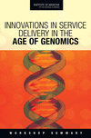
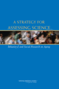

National Academies / Institute of Medicine
The National Academy Press (NAP) was created by the National Academies to publish the reports issued by the National Academy of Sciences, the National Academy of Engineering, the Institute of Medicine, and the National Research Council, all operating under a charter granted by the United States Congress. NAP publishes over 200 books a year on a wide range of topics in science, engineering, and health, capturing the most authoritative views on important issues in science and health policy. The institutions represented by NAP are unique in that they attract the nation's leading experts in every field to serve on their blue ribbon panels and committees.
More than 2,500 reports from the National Academies, including the Institute of Medicine, are available online from the National Academy Press.
http://nap.edu
http://www.iom.edu
Reports of Interest
(Also see Health Disparities Information and Resources)
Environmental Health Sciences Decision Making: Risk Management, Evidence, and Ethics. Workshop Summary
The workshop Environmental Health Sciences Decision Making: Risk Management, Evidence, and Ethics addressed emerging issues in risk management, weight of evidence, and ethics that influence environmental health decision making. The workshop engaged science interest groups, industry, government, and the academic sector to understand better decision-making processes and best practices for environmental health research.
http://iom.edu/Reports/2009/Environmental-Health-Sciences-Decision-Making-Risk-Management-Evidence-and-Ethics-Workshop-Summary.aspx 
The U.S. Commitment to Global Health: Recommendations for the Public and Private Sectors
Health is a highly-valued, visible, and concrete investment that has the power to both save lives and enhance the credibility of the United States in the eyes of the world. While the United States has made a major commitment to global health, there remains a wide gap between existing knowledge and tools that could improve health if applied universally, and the utilization of these known tools across the globe.
In 2008, the Institute of Medicine convened the expert Committee on the U.S. Commitment to Global Health to investigate the U.S. commitment to global health and to articulate a vision for future U.S. investments. In its 2009 report, The U.S. Commitment to Global Health: Recommendations for the Public and Private Sectors, the committee concludes that the U.S. government and U.S.-based foundations, universities, nongovernmental organizations, and commercial entities have an opportunity to improve global health.
http://iom.edu/Reports/2009/The-US-Commitment-to-Global-Health-Recommendations-for-the-Public-and-Private-Sectors.aspx 
Innovations in Service Delivery in the Age of Genomics. Workshop Summary
The Roundtable on Translating Genomic-Based Research for Health held the public workshop "Innovations in Service Delivery in the Age of Genomics" on July 27, 2008. The workshop set out to examine the current system of genetic service delivery, learn about some pioneering current practice models, and propose new models for integrating genetic and genomic innovations into education, training, and clinical practice. Participants discussed the strengths and challenges of the current system and considered a vision for the future of genetic and genomic services, which may not be so distant after all.
http://iom.edu/Reports/2009/Innovations-in-Service-Delivery-in-the-Age-of-Genomics-Workshop-Summary.aspx 
Ensuring Quality Cancer Care through the Oncology Workforce: Sustaining Care in the 21st Century. Workshop Summary
To help address the challenges in overcoming this potential crisis of cancer care, the National Cancer Policy Forum of the Institute of Medicine (IOM) convened the workshop “Ensuring Quality Cancer Care through the Oncology Workforce: Sustaining Care in the 21st Century” in Washington, DC on October 20 and 21, 2008. Workshop participants discussed how to address both the shortage in the oncology workforce as well as the health care workforce as a whole, to ensure the workforce does not become overburdened and is prepared to meet the growing number of patients in need of cancer care.
http://iom.edu/Reports/2009/Ensuring-Quality-Cancer-Care-through-the-Oncology-Workforce-Sustaining-Care-in-the-21st-Century-Workshop-Summary.aspx 
Health Literacy, eHealth, and Communication: Putting the Consumer First. Workshop Summary
There is great enthusiasm over the use of emerging interactive health information technologies—often referred to as eHealth—and the potential these technologies have to improve the quality, capacity, and efficiency of the health care system. However, many doctors, advocacy groups, policy makers and consumers are concerned that electronic health systems might help individuals and communities with greater resources while leaving behind those with limited access to technology. Even if equal access to technology could be ensured, most health websites are designed for people with a strong understanding of health information, also known as health literacy. Yet with the average U.S. adult reading at an eighth grade level, many people may be ill-equipped to take advantage of new health technologies even if they can access them.
In order to address this problem, the Institute of Medicine’s Roundtable on Health Literacy held a workshop to explore the current status of communication technology, the challenges for its use in populations with low health literacy, and the strategies for increasing the benefit of these technologies for populations with low health literacy. The summary of the workshop, Health Literacy, eHealth, and Communication: Putting the Consumer First, includes participants’ comments on these issues.
http://iom.edu/Reports/2009/Health-Literacy-eHealth-and-Communication-Putting-the-Consumer-First-Workshop-Summary.aspx 
Toward Health Equity and Patient-Centeredness: Integrating Health Literacy, Disparities Reduction, and Quality Improvement. Workshop Summary
During a time of economic uncertainty, the national discussion of health reform understandably focuses on insurance coverage and cost. To receive the greatest value for health care, it is important to focus on issues of quality and disparity, and the ability of individuals to make appropriate decisions based on basic health knowledge and services, or health literacy. As health care practitioners often see patients from diverse cultures who speak different languages and have a wide range of individual needs, practitioners must ensure all patients receive the same quality of care.
Three IOM bodies (the Forum on the Science of Health Care Quality Improvement and Implementation, the Roundtable on Health Disparities, and the Roundtable on Health Literacy) jointly convened a workshop, "Toward Health Equity and Patient-Centeredness: Integrating Health Literacy, Disparities Reduction, and Quality Improvement," on May 12, 2008, to discuss these concerns.
http://iom.edu/Reports/2009/Toward-Health-Equity-and-Patient-Centeredness-Integrating-Health-Literacy-Disparities-Reduction-and-Quality-Improvement-Workshop-Summary.aspx 
America’s Uninsured Crisis: Consequences for Health and Health Care
The growing number of uninsured Americans—totaling 45.7 million as of 2007—is taking a toll on the nation’s health. One in five adults under age 65 and nearly one in ten children are uninsured. Uninsured individuals experience much more risk to their health than insured individuals. In its 2009 report "America’s Uninsured Crisis: Consequences for Health and Health Care," the Institute of Medicine points to a chasm between the health care needs of people without health insurance and access to effective health care services. This gap results in needless illness, suffering, and even death.
Now is the time for action, say the report’s authors, recommending that the President work with Congress and other public and private sector leaders on an urgent basis to achieve health insurance coverage for everyone and, in order to make that coverage sustainable, to reduce the costs of health care and the rate of increase in health care spending.
http://www.iom.edu/CMS/3809/54070/63118.aspx 
Multi-Center Phase III Clinical Trials and NCI Cooperative Groups. Workshop Summary
The National Cancer Institute’s (NCI) Cooperative Group Program is one of the primary venues for the conduct of cancer clinical trials. The cooperative groups collectively recruit roughly 22,000 patients in more than 1,700 institutions to participate in multi-center clinical trials each year. Compared to industry clinical trials, the Cooperative Group Program conducts more trials focused on the best management of disease rather than on specific agents, and includes trials on cancer prevention, early detection, and comparative effectiveness.
The NCI-sponsored cooperative groups have made important contributions to improving treatment for many types of cancer, including breast, ovarian, colorectal, and childhood cancers. Cooperative group research has been instrumental in establishing innovative treatments that improve outcomes and quality of life. Despite these successes, the Cooperative Group Program has faced a number of challenges that threaten its effectiveness, including cumbersome, complex processes that have created inefficiencies, flat budgetary allocations, and lagging patient and physician participation.
To address this problem, the National Cancer Policy Forum (NCPF) convened a workshop titled "Multi-Center Phase III Clinical Trials and NCI Cooperative Groups" in Washington, DC, on July 1-2, 2008. The proceedings of this workshop will serve as an input to an IOM committee examining the role of the NCI cooperative groups in the conduct of cancer clinical trial. That committee’s consensus report is scheduled for release in spring 2010.
http://iom.edu/Reports/2009/Multi-Center-Phase-III-Clinical-Trials-and-NCI-Cooperative-Groups-Workshop-Summary.aspx 
Cancer Control Opportunities in Low- and Middle-Income Countries
Cancer is generally low or absent on the health agenda of most the world’s low- and middle-income countries (LMCs), even as it is growing as a share of these countries’ overall disease burden. In light of this situation, the National Cancer Institute and the American Cancer Society asked the Institute of Medicine (IOM) to study the issue and provide an assessment and recommendations to tackle the problem. In response, the IOM has produced a report, Cancer Control Opportunities in Low- and Middle-Income Countries.
http://www.iom.edu/CMS/3722/23083/40207.aspx 
Ending the Tobacco Problem: A Blueprint for the Nation
To further curb smoking in the United States requires not only strengthening current tobacco control measures, but also creating a stronger role for federal oversight of the production, promotion, and sale of tobacco products, says a new report from the Institute of Medicine. Among other steps, the report recommends a combination of higher excise taxes, indoor smoking bans nationwide, and regulation of marketing and distribution.
http://books.nap.edu/openbook.php?record_id=11795 
A Strategy for Assessing Science: Behavioral and Social Research on Aging
This report responds to a request from the Office of Behavioral and Social Research (BSR) at the National Institute on Aging for a study on how best to assess the progress and vitality of areas of behavioral and social science research on aging and on how to identify the factors that contribute to the likelihood of discoveries in areas of aging research.
http://www.nap.edu/catalog.php?record_id=11788 
Adequacy of Evidence for Physical Activity Guidelines Development: Workshop Summary
The IOM is releasing Workshop on the Adequacy of Evidence for Physical Activity Guideline Development, a report that includes the presentations and discussions of more than 30 experts evaluating whether there is a sufficient evidence base for the U.S. DHHS to develop a comprehensive set of physical activity guidelines for Americans. For a copy please reply to this listserv and to read online or get a free PDF, please visit
http://www.nap.edu/catalog/11819.html 
Genes, Behavior, and the Social Environment: Moving Beyond the Nature/Nurture Debate
The Committee on Assessing Interactions Among Social, Behavioral, and Genetic Factors in Health pursued a variety of objectives. It identified a number of well described gene-environment interactions, reviewed the state of the science in researching such interactions, and recommended priorities not only on research itself but also on its workforce, resource, and infrastructural needs
http://www.iom.edu/CMS/3740/24591/36574.aspx 
Seafood Choices: Balancing Benefits and Risks
The expert committee for Seafood Choices: Balancing Benefits and Risks was asked to prioritize the potential for adverse health effects from both naturally-occurring and introduced toxicants in seafood; assess evidence on availability of specific nutrients in seafood compared to other food sources; determine the impact of modifying food choices to reduce intake of naturally-occurring and introduced toxicants on nutrient intake and nutritional status within the US population; develop a decision path for US consumers to weigh their seafood choices to obtain nutritional benefits balanced against exposure risks; and identify data gaps and recommend future research. To address the task of assessing benefit/risk trade-offs, the committee took a three-step approach: 1) analysis and balancing of the benefits and risks (including attention to characteristics that distinguish target populations as well as substitution predictions); 2) analysis of consumer perceptions and decision-making (understanding decision contexts and their variability, and assessing consumers’ behavior regarding how they perceive and make choices); and 3) design and evaluation of the decision support program itself (including format and structure of information, media, and combination of communication products and processes).
http://www.nap.edu/catalog.php?record_id=11762#toc 
Examining the Health Disparities Research Plan of the National Institutes of Health: Unfinished Business
The IOM recently released, "Examining the Health Disparities Research Plan of the National Institutes of Health: Unfinished Business." This report provides an assessment of how well the NIH Health Disparities Strategic Research Plan provides needed guidance to reduce and ultimately eliminate health disparities, and then, recommends ways to improve oversight and coordination of these research efforts.
http://www.nap.edu/catalog.php?record_id=11602#toc 
 From Cancer Patient to Cancer Survivor: Lost in Transition
From Cancer Patient to Cancer Survivor: Lost in Transition
Citing shortfalls in the care currently provided to the country's 10 million cancer survivors, From Cancer Patient to Cancer Survivor: Lost in Transition recommends that each cancer patient receive a "survivorship care plan." Such plans should summarize information critical to the individual's long-term care, such as the cancer diagnosis, treatment, and potential consequences; the timing and content of follow-up visits; tips on maintaining a healthy lifestyle and preventing recurrent or new cancers; legal rights affecting employment and insurance; and the availability of psychological and support services.
http://www.iom.edu/Reports/2005/From-Cancer-Patient-to-Cancer-Survivor-Lost-in-Transition.aspx 
Progress in Preventing Childhood Obesity: Focus on Schools - Brief Summary: Institute of Medicine Regional Symposium
This brief summary highlights the recurring themes for accelerating change and moving forward with obesity prevention efforts that emerged from the symposium: forging strategic partnerships; empowering local schools and communities; educating stakeholders; evaluating obesity prevention efforts; documenting the benefits of obesity prevention; innovating to address barriers; using a systems approach; and developing a long-term strategic plan.
http://www.iom.edu/Reports/2005/Progress-in-Preventing-Childhood-Obesity-Focus-on-Schools---Brief-Summary-Institute-of-Medicine-Regional-Symposium.aspx 
Improving Breast Imaging Quality Standards
Mammography is an important tool for detecting breast cancer at an early stage. When coupled with appropriate treatment, early detection can reduce breast cancer mortality. This study, titled Improving Breast Imaging Quality Standards, examines the current practice of mammography and breast cancer detection, with a focus on the FDA's Mammography Quality Standards Act (MQSA) oversight, and identifies areas in need of improvement.
http://www.iom.edu/Reports/2005/Improving-Breast-Imaging-Quality-Standards.aspx 
Assessing the Quality of Cancer Care: An Approach to Measurement in Georgia
Assessing the Quality of Cancer Care: An Approach to Measurement in Georgia describes and recommends a set of 52 quality indicators with which the Georgia Cancer Coalition can measure Georgia's progress in improving cancer care and reducing the number of cancer cases and deaths. The indicators apply to cancer prevention, early detection, diagnosis, and treatment and focus specifically on breast, colorectal, prostate, and lung cancers.
http://www.iom.edu/Reports/2005/Assessing-the-Quality-of-Cancer-Care-An-Approach-to-Measurement-in-Georgia.aspx 
Does the Built Environment Influence Physical Activity? Examining the Evidence -- Special Report 282
Does the Built Environment Influence Physical Activity? Examining the Evidence reviews the broad trends affecting the relationships among physical activity, health, transportation, and land use; summarizes what is known about these relationships, including the strength and magnitude of any causal connections; examines implications for policy; and recommends priorities for future research.
http://www.iom.edu/Reports/2005/Does-the-Built-Environment-Influence-Physical-Activity-Examining-the-Evidence----Special-Report-282.aspx 
Preventing Childhood Obesity: Health in the Balance
Children's health has made tremendous strides over the past century. In general, life expectancy has increased by more than thirty years since 1900 and much of this improvement is due to the reduction of infant and early childhood mortality. Given this trajectory toward a healthier childhood, we begin the 21st-century with a shocking development-an epidemic of obesity in children and youth. The increased number of obese children throughout the U.S. during the past 25 years has led policymakers to rank it as one of the most critical public health threats of the 21st-century. Preventing Childhood Obesity provides a broad-based examination of the nature, extent, and consequences of obesity in U.S. children and youth, including the social, environmental, medical, and dietary factors responsible for its increased prevalence. The book also offers a prevention-oriented action plan that identifies the most promising array of short-term and longer-term interventions, as well as recommendations for the roles and responsibilities of numerous stakeholders in various sectors of society to reduce its future occurrence. Preventing Childhood Obesity explores the underlying causes of this serious health problem and the actions needed to initiate, support, and sustain the societal and lifestyle changes that can reverse the trend among our children and youth.
http://books.nap.edu/catalog/11015.html 
Health Literacy: A Prescription to End Confusion:
This book examines the body of knowledge that applies to the field of health literacy, and recommends actions to promote a health literate society. By examining the extent of limited health literacy and the ways to improve it, we can improve the health of individuals and populations.
http://www.nap.edu/catalog/10883.html 
Enhancing the Vitality of the National Institutes of Health: Organizational Change to Meet New Challenges
The continued growth in the number of organizational units of NIH has been a cause of both concern and celebration for decades. Congress instructed NIH to have the National Academy of Sciences study whether "the current structure and organization of NIH are optimally configured for the scientific needs of the twenty-first century." This report summarizes the committee's recommendations.
http://www.nap.edu/catalog/10779.html?onpi_topnews_072903
 Fulfilling the Potential for Cancer Prevention and Early Detection
Fulfilling the Potential for Cancer Prevention and Early Detection
Cancer ranks second only to heart disease as a leading cause of death in the United States, making it a tremendous burden in years of life lost, patient suffering, and economic costs. Fulfilling the Potential for Cancer Prevention and Early Detection reviews the proof that we can dramatically reduce cancer rates. The National Cancer Policy Board, part of the Institute of Medicine, outlines a national strategy to realize the promise of cancer prevention and early detection, including specific and wide-ranging recommendations.
http://www.nap.edu/catalog/10263.html 
Meeting Psychosocial Needs of Women with Breast Cancer. (2004).
This report that examines the psychological consequences of the cancer experience. The report focuses specifically on breast cancer in women because this group has the largest survivor population (over two million) and is the most extensively studied cancer from the standpoint of psychological effects. The report characterizes the psychosocial consequences of a diagnosis of breast cancer; describes psychosocial services, how they are delivered, and evaluates their effectiveness; assesses the status of professional education and training and applied clinical and health services research; and proposes policies to improve the quality of care and quality of life for women with breast cancer and their families.
http://www.nap.edu/catalog/10909.html 
 Childhood Cancer Survivorship: Improving Care and Quality of Life. (2003).
Childhood Cancer Survivorship: Improving Care and Quality of Life. (2003).
The treatment of childhood cancer is one of oncology's great success stories. Most children and young adults under age 20 diagnosed with cancer prior to 1970 had little hope of being cured. Since then, cure rates, as measured in five-year survival, have increased to 78 percent.
http://www.nap.edu/catalog/10767.html?onpi_listserv082903 
Through the Kaleidoscope: Viewing the Contributions of the Behavioral and Social Sciences to Health -- The Barbara and Jerome Grossman Symposium. (2002). National Academy Press.
The importance of behavioral, social, economic, and environmental influences on health is increasingly recognized. The relationships among genetic factors, social influences, and the physical environment are now of growing interest to the research, policy, public health, and clinical communities. The Institute of Medicine brought together experts and collaborators at a symposium in May 2001. The resulting reports are the starting point for assessing the status of behavioral and social science research relating to health, identifying where the greatest opportunities appear to lie in translating this research, and recognizing the barriers that impede progress.
http://www.nap.edu/catalog/10417.html
 Committee on Assessing the System for Protecting Human Research Subjects, Board on Health Sciences Policy. (2001). Preserving Public Trust: Accreditation and Human Research Participant Protection Programs. Washington, DC: National Academy Press.
Committee on Assessing the System for Protecting Human Research Subjects, Board on Health Sciences Policy. (2001). Preserving Public Trust: Accreditation and Human Research Participant Protection Programs. Washington, DC: National Academy Press.
In response to a request from the Secretary of Health and Human Services, the Institute of Medicine formed the authoring committee to conduct a two-phase study to examine how to improve the structure and function of human research review programs. This report provides the committee's response to a review and consideration of proposed performance standards, accreditation standards, and approaches to monitoring and evaluating the system for protection of human research participants.
http://www.nap.edu/catalog/10085.html 
Committee on Communication for Behavior Change in the 21st Century: Improving the Health of Diverse Populations. (2001). Speaking of Health: Assessing Health Communication Strategies for Diverse Populations. Washington, DC: National Academy Press.
Public health communicators and health professionals face communication dilemmas every day. Speaking of Health looks at the challenges of delivering important messages to different audiences. Using case studies in the areas of diabetes, mammography, and mass communication campaigns, it examines the ways in which messages must be adapted to the unique informational needs of their audiences if they are
to have any real impact.
http://www.nap.edu/catalog/10018.html 
 Committee on the Early Detection of Breast Cancer, National Cancer Policy Board, Institute of Medicine. (2001). Mammography and Beyond: Developing Technologies for the Early Detection of Breast Cancer. Washington, DC: National Academy Press.
Committee on the Early Detection of Breast Cancer, National Cancer Policy Board, Institute of Medicine. (2001). Mammography and Beyond: Developing Technologies for the Early Detection of Breast Cancer. Washington, DC: National Academy Press.
Each year more than 180,000 new cases of breast cancer are diagnosed in women in the U.S. If cancer is detected when small and local, treatment options are less dangerous, intrusive, and costly -- and more likely to lead to a cure. Yet those simple facts belie the complexity of developing and disseminating acceptable techniques for breast cancer diagnosis. Even the most exciting new technologies remain clouded with uncertainty. Mammography and Beyond provides a comprehensive and up-to-date perspective on the state of breast cancer screening and diagnosis and recommends steps for developing the most reliable breast cancer detection methods possible.
http://www.nap.edu/catalog/10030.html 
 Committee on Health and Behavior: Research, Practice and Policy, Board on Neuroscience and Behavioral Health. (2001). Health and Behavior: The Interplay of Biological, Behavioral, and Societal Influences.
Committee on Health and Behavior: Research, Practice and Policy, Board on Neuroscience and Behavioral Health. (2001). Health and Behavior: The Interplay of Biological, Behavioral, and Societal Influences.
Health and Behavior reviews our improved understanding of the complex interplay among biological, psychological, and social influences and explores findings suggested by recent research -- including interventions at multiple levels that we can employ to improve human health.
http://www.nap.edu/catalog/9838.html 
 Committee on Quality of Health Care in America. (2001). Crossing the Quality Chasm: A New Health System for the 21st Century. Washington, DC: National Academy Press.
Committee on Quality of Health Care in America. (2001). Crossing the Quality Chasm: A New Health System for the 21st Century. Washington, DC: National Academy Press.
This book is the second in a series of publications from the Institute of Medicine's Quality of Health Care in America project. Health care today harms too frequently and routinely fails to deliver its potential benefits. Crossing the Quality Chasm recommends a sweeping redesign of the American health care system and provides overarching principles for specific direction for policymakers, health care leaders, clinicians, regulators, purchasers, and others.
http://www.nap.edu/catalog/10027.html 
 Kathleen M. Foley and Hellen Gelband (2001). Improving Palliative Care for Cancer: Summary and Recommendations National Research Council.
Kathleen M. Foley and Hellen Gelband (2001). Improving Palliative Care for Cancer: Summary and Recommendations National Research Council.
Palliative care should be integrated into cancer care from diagnosis to death. But significant barriers – attitudinal, behavioral, economic, educational, and legal – still limit access to care for a large proportion of those dying from cancer. In spite of tremendous scientific opportunities for medical progress against all the major symptoms associated with cancer and cancer death, public research institutions have not responded. This report identifies the special needs of cancer patients and the importance of the clinical and research establishment involved in cancer care to take a leadership role in modeling the best quality care from diagnosis to death for all Americans.
http://www.nap.edu/books/0309075637/html/ 
 Fitzpatrick, S.M. and Bruer, J.T. (eds.). (2001). Carving Our Destiny: Scientific Research Faces a New Millennium. Washington, DC: Joseph Henry Press.
Fitzpatrick, S.M. and Bruer, J.T. (eds.). (2001). Carving Our Destiny: Scientific Research Faces a New Millennium. Washington, DC: Joseph Henry Press.
This is a book for people who love and understand science and want to know more about contemporary research frontiers. The questions addressed are as fascinating as they are diverse: Is the human mind truly unique among the primates? Does "dark matter" really exist in the universe? What can the human genome tell us about our evolutionary history?
http://www.nap.edu/catalog/9753.html 
 Hewitt, M. and Petitti, D. (eds.). (2001). Interpreting the Volume-Outcome Relationship in the Context of Cancer Care. Washington, DC: National Academy Press.
Hewitt, M. and Petitti, D. (eds.). (2001). Interpreting the Volume-Outcome Relationship in the Context of Cancer Care. Washington, DC: National Academy Press.
Twenty papers about cancer surgery were included in a systematic review to examine the relationship between volume and outcomes. The 20 studies of cancer surgery suggest that a significant relationship between volume and outcomes does exist. The largest differences between low- and high-volume providers were found for the most complicated operations in rare cancers - pancreatectomy and esophagectomy.
http://www.nap.edu/catalog/10160.html?onpi_listserv071301 
 Stratton, K., Shetty, P., Wallace, R., Bondurant, S. (eds.). (2001). Clearing the Smoke: The Science Base for Tobacco Harm Reduction. Washington, DC: National Academy Press.
Stratton, K., Shetty, P., Wallace, R., Bondurant, S. (eds.). (2001). Clearing the Smoke: The Science Base for Tobacco Harm Reduction. Washington, DC: National Academy Press.
Despite overwhelming evidence of tobacco's harmful effects and pressure from anti-smoking advocates, current surveys show that about one-quarter of all adults in the United States are smokers. This audience is the target for a wave of tobacco products and pharmaceuticals that claim to preserve tobacco pleasure while reducing its toxic effects. Clearing the Smoke addresses the problems in evaluating whether such products actually do reduce the health risks of tobacco use.
http://www.nap.edu/catalog/10029.html 
 Field, M.J., Lawrence, R.L, and Zwanziger, L. (eds.). (2000). Extending Medicare Coverage for Preventive and Other Services. Washington, DC: National Academy Press.
Field, M.J., Lawrence, R.L, and Zwanziger, L. (eds.). (2000). Extending Medicare Coverage for Preventive and Other Services. Washington, DC: National Academy Press.
This report is intended to assist policy makers by providing syntheses of the best evidence available about the effectiveness of preventive and other services and by estimating the cost of Medicare to cover them.
http://www.nap.edu/catalog/9740.html 
 Hewitt, M. and Simone, J.V. (eds.). (2000). Enhancing Data Systems to Improve the Quality of Cancer Care. Washington, DC: National Academy Press.
Hewitt, M. and Simone, J.V. (eds.). (2000). Enhancing Data Systems to Improve the Quality of Cancer Care. Washington, DC: National Academy Press.
This report examines the strengths and weaknesses of current data systems and makes recommendations for enhancing data systems to improve the quality of cancer care.
http://www.nap.edu/catalog/9970.html 
 National Cancer Policy Board. (2000).State Programs Can Reduce Tobacco Use. Washington, DC: National Academy Press.
National Cancer Policy Board. (2000).State Programs Can Reduce Tobacco Use. Washington, DC: National Academy Press.
Tobacco control programs can reduce tobacco use and can incorporate many different elements modeled on existing state programs that have proved effective. The effects of counteradvertising and education depend on their "intensity" and "dose." Smoke-free work site policies reduce illness and death from involuntary smoking, increase smoking cessation, and reduce consumption among continuing smokers. The report highlights these and other proven notions about tobacco use and prevention.
http://books.nap.edu/catalog/9762.html?onpi_headlines_062801b 
 Haynes, M.A. and Smedley, B.D. (eds.). (1999). The Unequal Burden of Cancer: An Assessment of NIH Research and Programs for Ethnic Minorities and the Medically Underserved. Washington, DC: National Academy Press.
Haynes, M.A. and Smedley, B.D. (eds.). (1999). The Unequal Burden of Cancer: An Assessment of NIH Research and Programs for Ethnic Minorities and the Medically Underserved. Washington, DC: National Academy Press.
We know more about cancer prevention, detection, and treatment than ever before – yet not all segments of the U.S. population have benefited to the fullest extent possible from these advances. Some ethnic minorities experience more cancer than the majority population, and poor people – no matter what their ethnicity – often lack access to adequate cancer care. This book provides an authoritative view of cancer as it is experienced by ethnic minorities and the medically underserved.
http://www.nap.edu/catalog/6377.html